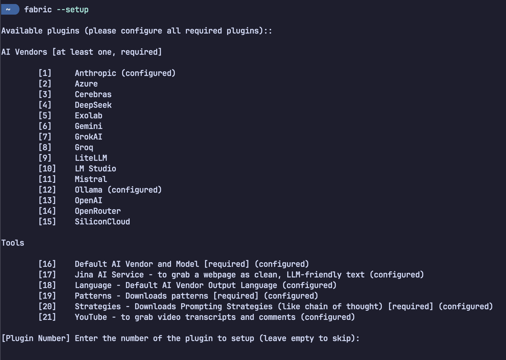

A different type of AI tool for command line junkies.
Table of Contents
Introduction
Fabric isn't just another AI CLI tool, I have been using it over the past few months to accelerate my grasp over research papers, media, and content of all sorts. Fabric is a tool by Daniel Miessler that offers a Unix-native command-line interface allowing you to directly to AI through a growing library of "Patterns"— curated, open-source system prompts engineered to solve real problems with minimal "friction."
If you're someone who works with text and/or consumes a lot of content, or just wants to streamline repetitive tasks like summarizing videos, extracting insights, or analyzing messy logs, Fabric is a force multiplier.
Why Fabric?
At it's core, Fabric serves as a proxy from users to different LLM services so that users can get things done with less cognitive overhead, fewer clicks, and more composability via traditional command pipelines.
For me, here’s why it stands out:
-
Frictionless AI Access: Fabric removes the need to visit web interfaces, load custom GPTs, or rephrase prompts manually. Everything is piped directly through the terminal, your clipboard, or even local APIs.
-
Patterns: Every Pattern is a reproducible, editable Markdown file that provided tried and tested prompts and instructions for models for common actions like composing emails, summarizing content, or analyzing a study, as some examples. Patterns are specified using the
-pflag, and the below example demonstrates the piping of Fabric commands, using Markdown as a common stream:# YouTube transcript -> "extract insights" -> "format as LaTeX" -> Compile PDF yt "https://youtu.be/example" | fabric -p extract_wisdom | fabric -p write_latex | to_pdf -
Text as the Interface: Embrace the "world of text" paradigm. Fabric works best when everything is treatable as text: podcasts become transcripts, notes become markdown, and logs become structured data.
-
Ollama Integration: Fabric offers integration with local models through Ollama. This means that I can use the tool in an offline, private manner if I'd like.
Real Workflows That Show the Power
Here are some examples that I have used that demonstrate Fabric’s raw utility:
-
Research Synthesis Extract key points from academic papers and create tweet-length takeaways:
pbpaste | fabric -p extract_wisdom | fabric -p create_micro_summary -
Understand Foreign Codebases Quickly Instantly grok unfamiliar C or Python blocks:
pbpaste | fabric -p explain_code -
Summarize Long YouTube Videos in Seconds Stop wasting time scrubbing through 2-hour interviews:
fabric -y "https://www.youtube.com/watch?v=uXs-zPc63kM" -p extract_wisdom -
Log Analysis for Developers and Sysadmins Triage messy logs and find root causes without writing a regex:
fabric -p analyze_logs < /var/log/syslog
The Philosophy Behind It
"Patterns" Are the Secret Sauce
A Pattern is essentially a prompt distilled into a repeatable tool. Want to inspect or improve a Pattern? Just open the Markdown:
~/.config/fabric/patterns/extract_wisdom/system.md
And if you're unsure how to craft one, there's a Pattern for that too:
improve_prompt.
Human-Centric Design
In interviews, Miessler has said that he didn’t build Fabric to automate life—he built it to make space for more meaningful work. His idea of a "world of text" means anything that can be turned into text is fair game for Fabric—and AI. Transcripts, logs, journals, notes, lecture recordings—turn them into signal, not noise.
Fabric helps you decide:
- What’s worth reading?
- What deserves deep thought?
- What should be distilled and filed?
Basic Setup (in 60 seconds)
To install, follow the GitHub instructions, or if you're in a hurry:
brew install fabric-ai # macOS
yay -S fabric-ai # Arch Linux
go install github.com/danielmiessler/fabric@latest
Run fabric --setup to add your API keys for OpenAI, Anthropic, Grok, or a
local LLM server:

The setup window for Fabric to integrate with your LLM service of choice.
NOTE: Use
alias fabric='fabric-ai'if installed via package manager.
Final Word
Fabric has personally saved me lots of time in digesting content and concepts faster, from analyzing research papers to extracting the best ideas from long YouTube videos. With already so much of my workflow being from the command line, Fabric has been a great addition to my tool belt that keeps me close to my work.
If your workflow involves summarizing, extracting, transforming, or interacting with anything in text form—and you like the CLI—you owe it to yourself to try Fabric.